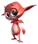
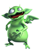
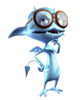
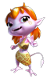

|  | Cocoto is de vrolijkste bewaker van de ketel en is tot over zijn oren verliefd op de beeldschone Fairy van Abyss. |
|  |
Baggy is het sterkste duiveltje van de Abyss, maar is niet zo snugger.
|
|  |
Neuro is de slimste van het stel. Hij is altijd op zoek naar antwoorden...
|
|  |
Shiny
is een uitgekookte tante. Zowel Neuro en Baggy zijn verliefd op haar,
maar Cocoto ziet haar niet staan en dat vindt ze maar niks!
|
|
Fairy woont haar hele leven al in Abyss en is op een vreemde manier verbonden aan de heilige ketel van de duiveltjes...
|